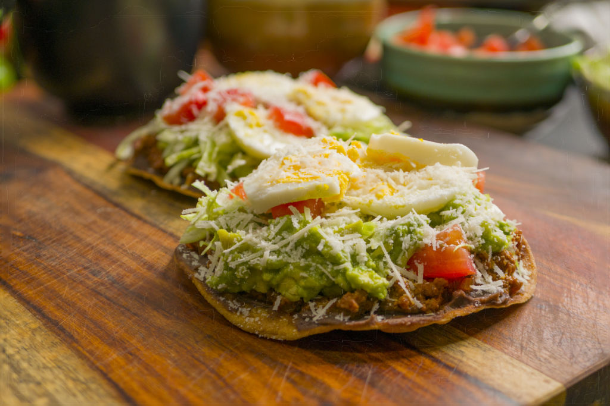

Growing up it was a treat to eat Salvadoran enchiladas and that memory has always stayed with me. Now I want to share that with you and hopefully it will be something you remember too as it’s quite the experience. I attribute this to the many layers of flavors that makeup the enchilada itself. Each layer is delicious on its own but the best part is that they all taste great together.
This is my interpretation of a Salvadoran Enchilada or a Mexican Tostada. Feel free to mix it up! After all, the best thing about food is that you can make it your own.
I’ve made this dish for many people and so far they have all enjoyed it. I hope you will too.
Ingredients
- 1 Onion
- 1 Green Pepper 3 Tomato
- 1 Can Tomato Paste
- 2 Large Eggs
- 8 Thin Corn Tortillas
- 1 Lettuce
- 2 Limes
- 2 Avocados
- Salt to taste
- 1 Pound Ground Beef – (I prefer grass fed)
- 1 Garlic Powder
- 1 Chipotle Powder
- 1 Lea & Perrins Worcestershire Sauce
- 1 Pepper
- Oil
- Refried Beans
Instructions
Ground Beef
- Chop 1/2 an onion
- Chop 1 medium tomato
- Chop 1/2 small green pepper
- Heat skillet with a medium-high fire
- Add 1 Tbsp. of oil to the pan
- Add the chopped tomato, onion and green pepper and add 1/2 tsp of salt
- Reduce the fire to low and cover. Check back in 4-5min stir and check the tomatoes. If all that remains is the skin then we are ready for the next step.
- Add the 1 pound of ground beef.
- Add 1 tsp of Salt, 1/2 tsp of Garlic Powder, 1 tsp of Chipotle Powder, 1 tsp of Worcestershire Sauce, Pepper to taste or around 1/4 tsp and 3/4 small can of Tomato Paste.
- Mix well while breaking down the meat. I like to do a chopping motion with the spoon to avoid having big chunks of meat. Once it's broken down enough cover and set the flame to low. After 5min check and stir then again around 10min.
- After the 10-12 minutes check again and taste. Adjust for salt and seasoning.
Hard Boiled Eggs
- Using a sauce pan boil enough water to cover eggs 3/4 of the way.
- With a ladle or spoon add two eggs and cover.
- Remove from sauce pan after 12 minutes.
- Add to a bowl of cold water and peel
- Once peeled, cut the eggs into thin slices
Lettuce
- Cut the lettuce into thin strands. Not too long and not too short. If they are too long they will be difficult to eat and if they are too small they will fall off easily. Set aside
Tomatoes
- Dice two tomatoes into squares and set aside.
Mashed Avocado
- Cut two Hass Avocados in half and scoop out the interior.
- Mash them lightly enough for some texture to remain.
- Add salt and squeeze half of a lime. Mix lightly.
Cheese
- Grate your favorite dry cheese. I like Parmigiano-Reggiano as it gives that saltiness along with the flavor.
Fried Tortillas
- Heat a skillet with a medium flame and add a generous amount of oil to cover the bottom of the skillet.
- Add a tortilla using tongs and let it fry for 12 seconds. Flip it and keep some light pressure in the center of the tortilla. This is to avoid it puffing up so the tortilla can remain flat.
- Once it's lightly browned on one side, repeat on the other.
- Don't over fry or under fry the tortilla. The center should feel crispy and not squishy. The outer edges should be a golden brown and not any darker.
- I made around 8 tortillas and placed them in a paper towel lined bowl to catch the oil dripping. I had them standing as well not stacked on top of each other.
Assemble the Tostada/Enchilada!
- Group your toppings and grab a fried tortilla
- For the first layer add around 1 massive teaspoon (maybe 1 Tbsp.) of the refried beans and spread it enough to cover the tortilla.
- Next a very generous tablespoon of the ground beef. Spread it evenly.
- Next a generous teaspoon of mashed avocado.
- Add Shredded Lettuce on top
- 1-2 Slices of hard boiled egg
- A teaspoon or two of diced tomatoes.
- Finally a generous amount of shredded/crumbled cheese.
- That's it! Feel free to Remix the steps.